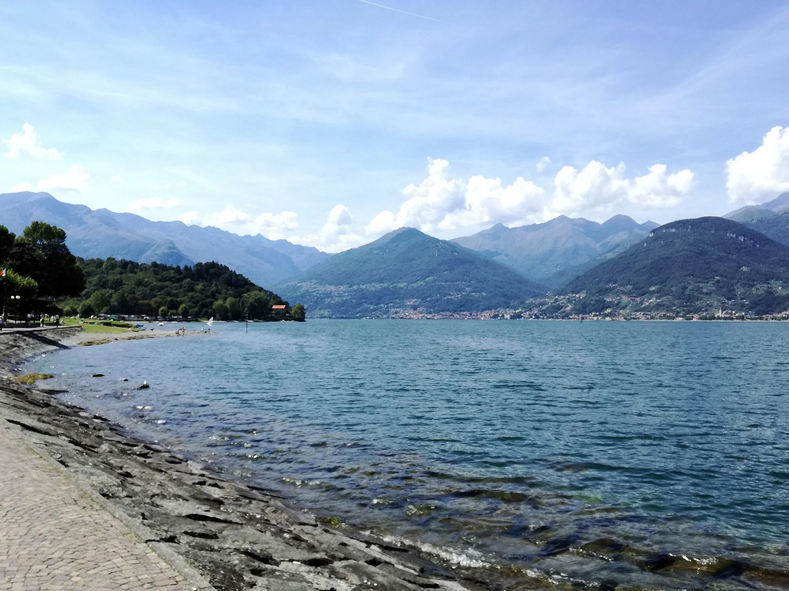

Lac de Côme — Colico
Lombardie, Italie · windsurf, kitesurf, baignade

Extrémité nord du lac de Côme, autour de Colico et de Dervio, où les montagnes canalisent des vents thermiques réguliers. Le matin souffle le Tivano, l’après-midi la Breva : un classique de la voile légère en Italie.
- Lieu
- Lombardie, Italie
- Niveau
- Intermédiaire
- Activités
- windsurf, kitesurf, baignade
- Type d'eau
- lake
- Coordonnées
- 46.12, 9.35 (position approximative du secteur)
Dangers à connaître
- Eau fraîche et profonde près des rives.
- Ferries et bateaux sur le lac : garde tes distances avec les lignes régulières.
Le conseil d'Ocean Buddy
Vise l’après-midi pour la Breva et renseigne-toi auprès des clubs locaux sur les zones où le kite est toléré.
Ouvrir dans Ocean Buddy Télécharger sur l'App Store
Source : Fiche Ocean Buddy · septembre 2026 · à vérifier localement.